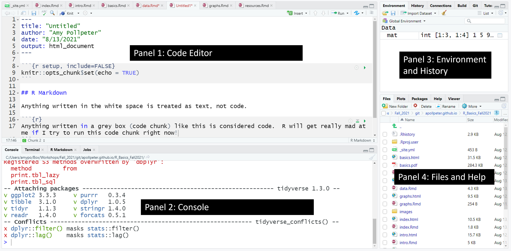
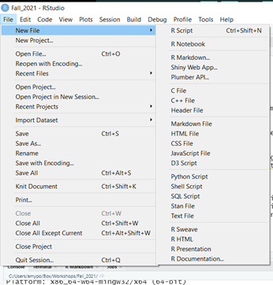
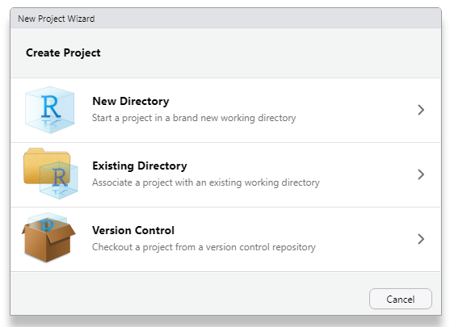
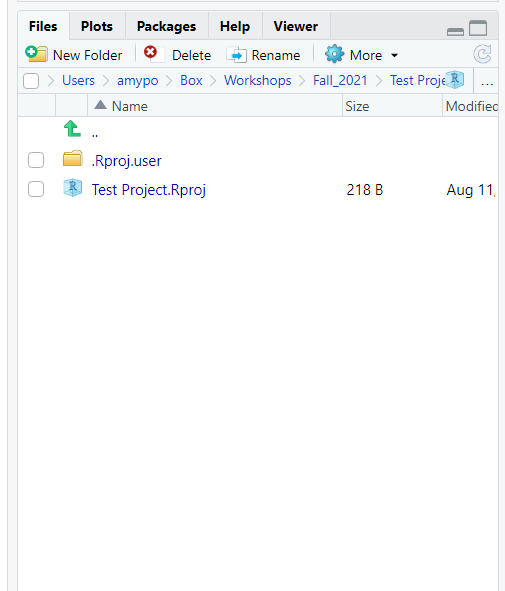

 ### FYI: you may not have panel 1 at this point, and panel 2 will be taking up the entire left side of your screen. That’s OK. Once we get to opening a file, it’ll look like this!
This is where the bulk of your coding will be done.
4 tabs are present in this panel:
Console, Terminal, R Markdown, Jobs
Most of the time, you’ll be in the Console tab.
The Terminal tab is basically your typical unix terminal (this can sometimes be useful for using git - we won’t be using it today).
R Markdown: I’ll touch on this later.
Jobs: Honestly, I’ve never used this tab - therefore, it’s beyond the scope of Basic R.
I usually have this one set as Environment. As we assign variables, or create data frames and other R classes, they will show up in this list. Can be very useful. If you have a dataframe in this list, can click on it to view that dataframe (we’ll discuss this more later).
If the File tab is active, this will list all the files in your current working directory.
If you create a plot in a script, it will show up here in the Plots tab.
If the Packages tab is active, it will show all your available packages (we’ll discuss these in a mooment too).
If Help tab is active, it will show help topics.

We will mainly be using R markdown.
Another common file type is R script. This opens up a basic empty script file. I’ll try to touch on differences between these as we go on.
We are going to start this by creating a new project. I find it helpful to create my files within projects. I include each project in it’s own folder so it is easier to manage them.
* Having a separate folder for your project can become essential. A current data analysis research project I have been working on has over 5,000 files in it at the moment. That is just the files being used for the R programming in the project. I have about 30 different R markdown files (I tend to separate different parts of the analysis) plus numerous output files such as graphs that I use as figures.
Go to File –> New Project
You should see the following window:

Click on Existing Directory (second choice) This will open up a window where you can click Browse to navigate to a specific folder you would like to store your project in. I suggest having a folder for this workshop and within it create a folder titled R Project 1 or something similar.
You will notice in the Files tab (bottom right), it will now show your Project name:
